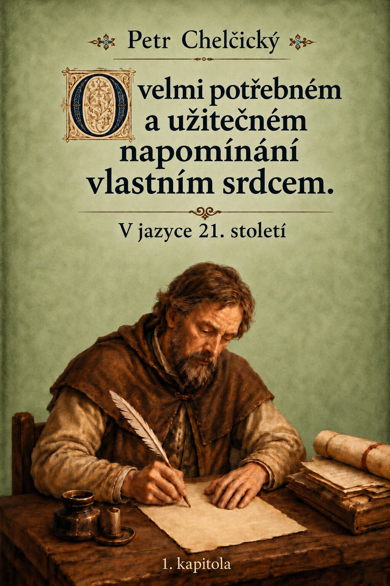

Přejít k obsahu stránky
Domů
›
Traktáty
›
O velmi potřebném a užitečném napomínání vlastním srdcem – první kapitola
vcelkakorektorka.cz
Digitální edice
Úvod
Traktát
Ediční poznámka
Doslov
Tiráž

Začít číst
Přejít k traktátu
↓ Stáhnout EPUB
↓ Stáhnout PDF